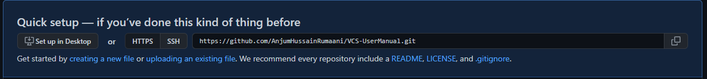
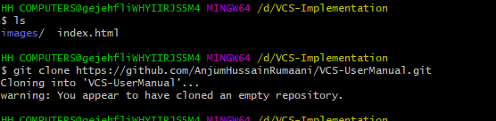
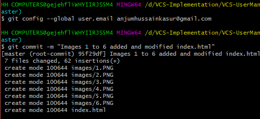
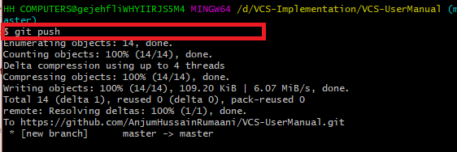
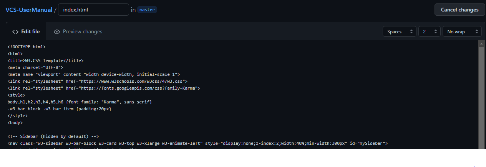

In the upper-right corner of any page, use the drop-down menu, and select New repository.
Type a short, memorable name for your repository.
Optionally, add a description of your repository.
Choose a repository visibility.
Select Initialize this repository with a README.
Click Create repository.
modifiedddddddddddddddddddddddddddddddddddddddddddddddddddddddddddddddddddddddddddddddddddd
On the GitHub website, click on you repository of interest. Locate the green button named Code and click on it. ... Copy the GitHub URL. Open a Git client such as the BASH shell or GitHub Desktop on your local machine. Use the GitHub URL to clone the remote repo.
Next, clone your newly created repository from GitHub to your local computer. From your repository page on GitHub, click the green button labeled Clone or download, and in the “Clone with HTTPs” section, copy the URL for your repository. Next, on your local machine, open your bash shell and change your current working directory to the location where you would like to clone your repository. Note that here we are using a bash command - cd (change directory). The repository name and output numbers that you see on your computer, representing the total file size, etc, may differ from the example provided above. To verify that your repository now exists locally, type ls in your terminal. The ls command lists the files & folders available in your current directory. You should see a directory with the same name as the repository that you created previously on GitHub.

Add files
You can add an individual file or groups of files to git tracking. To add a single file, use
git add file-name-here-with-extension
The output from git status indicates that you have modified the file README.md. To keep track of this
change to this file, you need to
add the changes, then
commit the changes.
Commit files Once you are ready to make a snapshot of the current state of your repository, you can use git commit. The git commit command requires a commit message that describes the snapshot / changes that you made in that commit. A commit message should outline what changed and why. These messages help collaborators and your future self understand what was changed and why allow you and your collaborators to find (and undo if necessary) changes that were previously made. If you are not committing a lot of changes, you can create a short one line commit message using the -m flag: git commit -m "Editing the README to try out git add/commit" Alternatively, if you are committing many changes, or a small number of changes that require explanation, you’ll want to write a detailed multi-line commit message using a text editor.
Push changes to GitHub So far we have only modified our local copy of the repository. To add the changes to your git repo files on your computer to the version of your repository on GitHub, you need to push them GitHub. You can push your changes to GitHub with: git push You will then be prompted for your GitHub user name and password. After you’ve pushed your commits, visit your repository on GitHub and notice that your changes are reflected there, and also that you have access to the full commit history for your repository!
The git pull command is used to fetch and download content from a remote repository and immediately update the local repository to match that content. ... Once the content is downloaded, git pull will enter a merge workflow. A new merge commit will be-created and HEAD updated to point at the new commit.
